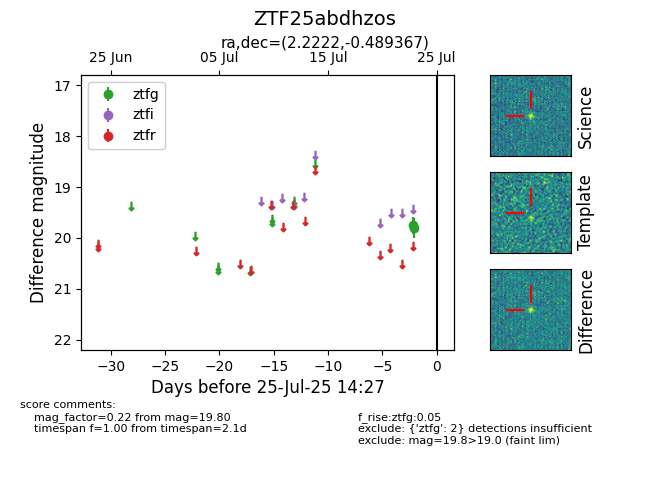

Target ZTF25abdhzos at 2025-07-25 14:27, see:
FINK: fink-portal.org/ZTF25abdhzos
Lasair: lasair-ztf.lsst.ac.uk/objects/ZTF25abdhzos
ALeRCE: alerce.online/object/ZTF25abdhzos
alt names
ZTF25abdhzos (ztf,fink)
coordinates:
equatorial (ra, dec) = (2.2222,-0.48937)
galactic (l, b) = (100.1981,-61.46875)
photometry
last ztfg=19.80
2 ztfg detections
